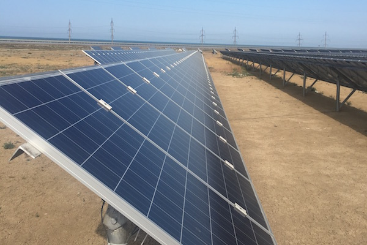
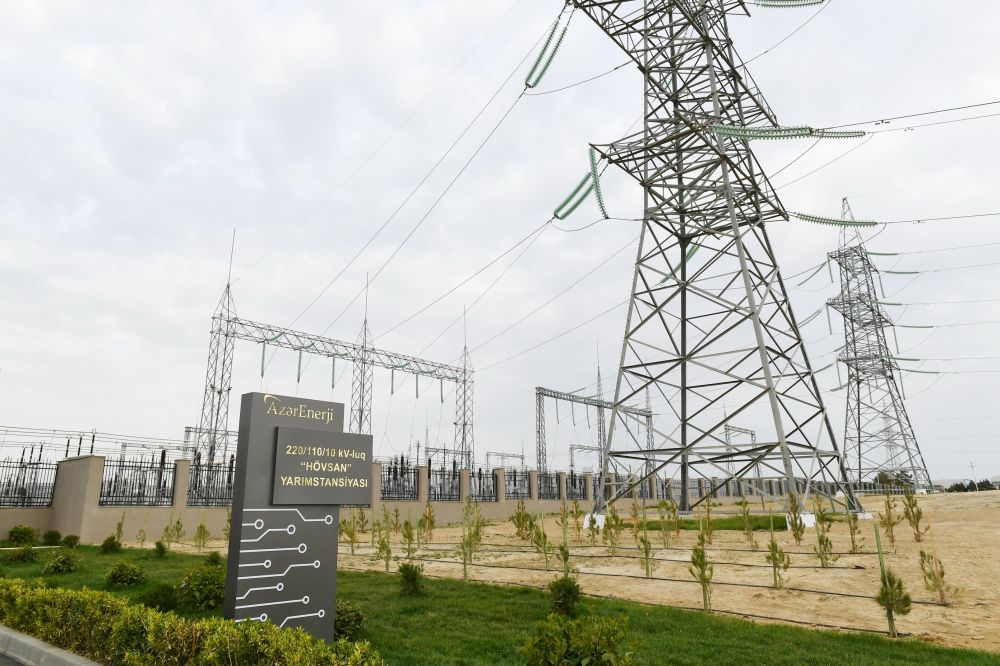
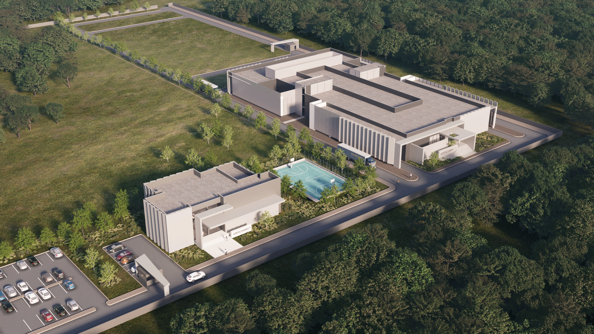
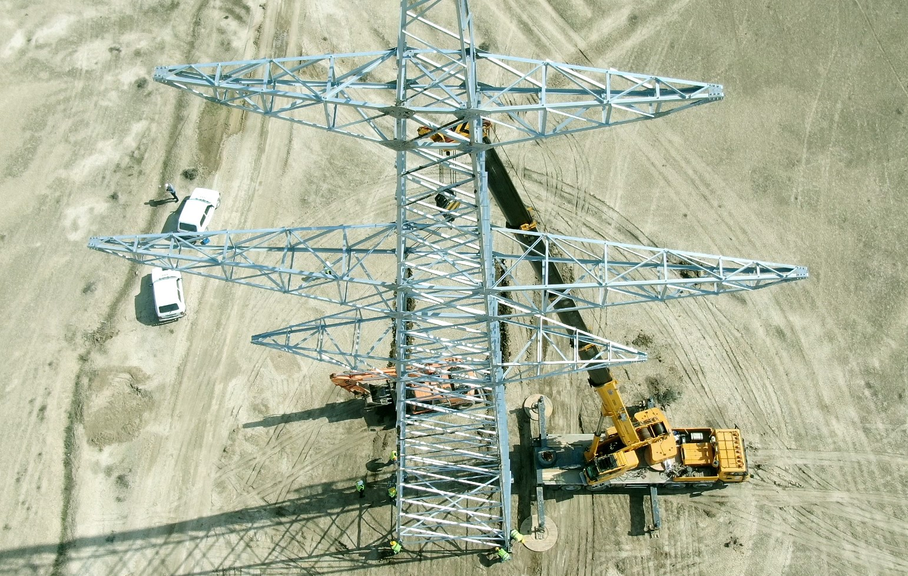

Solar EPCгенерация и площадка
Закрытый демонстрационный прототип. Введите пароль доступа для просмотра стратегического пульта.




По двум площадкам нужно решение координатора до встречи во вторник.
Открытые заказы и долги требуют прозрачной цепочки финсогласования.
Движение склада пока не связано с рабочими позициями.
Обнаружены в тендере, складе, актах и денежном потоке.
Смысл пульта — не собрать ещё один отчёт, а связать каждый заказ, материал, табель, акт и платёж с проектом, структурой работ, кодом затрат и ответственным.
Идея для AVENSOL: качество, безопасность, версия документа и договорное соответствие не живут отдельной папкой. Они становятся проверкой перед закупкой, выдачей материала, закрытием объёма, актом и оплатой.
Единый управленческий вид: роль проекта, риски, график и ежедневные действия.
Пульт превращает разрывы в конкретные управленческие решения.
Подтвердить, где AVENSOL выступает как комплексный подрядчик, пакетный подрядчик, инженерный подрядчик или управляющая команда.
Связать тендерные допущения с площадкой, закупками, складом и финансами.
Нефтчала выглядит сильным кандидатом для первой контролируемой цепочки.
То, что уже прозвучало в сообщениях, сразу превращается в диагностические блоки.
4 площадки и склады, но движение материалов не связано с работами, актами и бухгалтерией.
Железобетон в акте идёт одной строкой, а внутри бетон, арматура, опалубка, труд, техника и потери.
Оплата должна видеть заказ, согласования, поставку, бюджетный лимит и будущую потребность в деньгах.
Свой персонал и субподрядчики должны попадать в стоимость проекта по рабочей позиции.
Дорожная карта, которую можно проговорить на встрече без технической перегрузки.
ведомость объёмов, допущения и финальный бюджет живут отдельно от площадки. После выигрыша тендер не всегда превращается в управляемые лимиты.
Приход, перемещение, выдача и фактический расход не всегда связаны с рабочей позицией, кодом затрат и актом.
Финансы сталкиваются с проблемой на этапе оплаты, когда обязательство уже создано и спорить поздно.
Табели, переработки и субподрядный персонал должны попадать в проектную себестоимость, а не оставаться отдельной кадровой таблицей.
Одна строка betonarme может прятать бетон, арматуру, опалубку, труд, технику, потери и тесты.
Когда данные не соединены, решение появляется после потери маржи, а не до неё.
Не набор таблиц, а список решений: где деньги под риском, где срок сорвётся, какой объект требует вмешательства и какую оплату нельзя выпускать без проверки цепочки.
Пять сигналов, которые должны появляться первыми.
Пилот можно заменить другим объектом, но логика остаётся той же: один объект, одна цепочка, измеримый результат.
Собрать ведомость объёмов, бюджет, складские движения, заказы, табели и отчёты площадки.
Зафиксировать структуру работ, коды затрат, ответственных и матрицу согласований.
Провести процесс: заявка → заказ → склад → расход → себестоимость.
Показать потребность в деньгах, отклонения, решения и бриф собственника по пилоту.
Проверить ведомость объёмов, пропуски, странные цены, слабые допущения и вопросы к заказчику.
Найти позиции, где цена выбивается из базы, рынка или прошлых проектов.
Объяснить, почему фактическая себестоимость ушла от финального бюджета и кто должен действовать.
Показать дефицит, пересорт, подозрительный расход и закупки, которые сорвут график.
Собрать открытые заказы, долги, счета, потребность в деньгах и оплаты, которые требуют стоп-контроля.
Подготовить короткий бриф: что изменилось, где риск, какие решения нужны сегодня.
Это слой, который отличает лидера EPC от обычного подрядчика: система не просто показывает отчёт, а не даёт закрыть действие без качества, безопасности, актуального документа и договорного основания.
Не “мы внедрим регламенты”, а “каждая операция получает цифровой допуск”.
Стандарты проходят через всю цепочку: тендер, закупки, склад, площадка, акты, финансы, персонал и планирование.
| Блок | Gatekeeper | Управленческий эффект |
|---|---|---|
| Тендер | Квалификация, ITP, требования заказчика, риски | Смета учитывает не только цену, но и обязательства качества. |
| Закупки | Сертификаты, approved vendor list, дата потребности | Материал нельзя купить без связи с работой и контролем качества. |
| Склад | Партия, сертификат, входной контроль, локация | Появляется прослеживаемость материала до акта. |
| Площадка | Наряд, чек-лист, фото, актуальный чертёж | Daily report становится доказательством, а не пересказом. |
| Акты | ITP, исполнительная документация, NCR/CAR | Hakediş закрывается только по подтверждённому объёму. |
| Финансы | Заказ, поставка, входной контроль, лимит договора | Оплата не проходит без фактического и юридического основания. |
| Персонал | Допуск, квалификация, табель, HSE-инструктаж | Стоимость труда связана с безопасным и разрешённым объёмом. |
| Планирование | Контрольные точки качества и безопасности | График видит не только сроки, но и условия готовности работ. |
Что нужно добавить в компанию, чтобы претендовать на первое место.
Этот экран отвечает на вопрос Нежата: “А как это будет выглядеть в работе?” Здесь стратегическая рамка превращается в цифры, заявки, склад, акты, cash flow и ИИ-вопросы.
Минимальный набор данных, чтобы перейти от красивой концепции к диагностике.
Не “сразу внедрить всё”, а дать управляемый диагностический результат.
Нужно подтвердить по каждому проекту до проектирования системы.
Под риском, пока не разложена структура себестоимости.
Пять требуют решения собственника или гендиректора.
Один проект, одна роль, один бюджет и единый след рисков.
| Поле контроля | Сейчас | Цель |
|---|---|---|
| Роль | Определена частично | Подтверждено: комплексный подряд / инженерный подряд / пакет работ |
| Бюджет | Excel и тендерные файлы | Зафиксированный финальный бюджет по структуре работ |
| Отчёты | Ручные обновления с площадки | Ежедневный отчёт по рабочей позиции |
| Решения | Поздняя эскалация | Ответственный и срок действия |
Где проект первым теряет управляемость.
ИИ работает полезно только после контроля цепочки данных.
Вопросы, которые руководство должно задавать естественным языком.
Суммировать изменения по себестоимости, складу, графику, труду и оплатам.
Найти открытые заказы, связанные с ближайшими работами.
Объяснить строку выручки через реальную структуру себестоимости.
Готово к описанию пилотного процесса.
Нужны проект, код затрат и ответственный.
ИИ объясняет отклонения и готовит управленческие заметки.
Что модуль должен контролировать до того, как ИИ станет полезен.
Цифровые условия допуска к операции: без них действие остаётся риском, а не управляемым процессом.